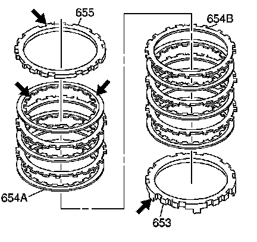
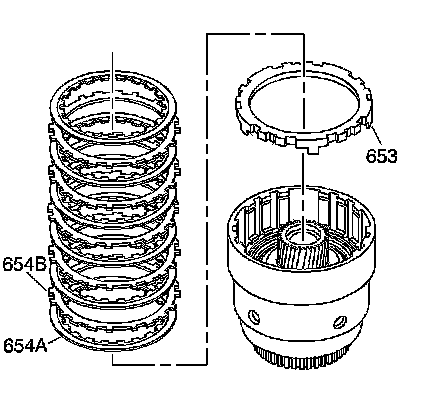
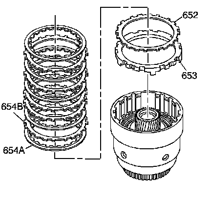
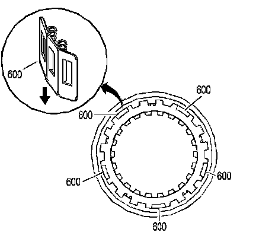
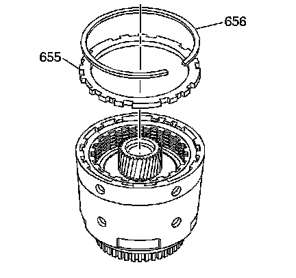

3-4 Clutch Assemble
3-4 Clutch Assemble

Important: The part 654A may have 5, 6 or 7 plates.
1. Inspect the 3rd and 4th clutch apply plate (653), the fiber plate assemblies (654A), the steel plates (654B) and the selective backing plate (655) for the following conditions:
^ Damaged tangs
^ Delamination
^ Excessive wear
^ Heat damage or wear
^ Surface finish
^ Flatness

2. Install the 3rd and 4th clutch apply plate (653) into the input housing. Index each leg of the apply plate into the apply ring legs.
Notice: The correct number of fiber plates must be used to avoid damage to the transmission. An incorrect stack up height can cause either excessive clutch slippage or insufficient release, resulting in burned clutch plates.
Important: The first steel plate (654B) has the same spline configuration as the 3rd and 4th clutch apply plate (653).
Important: The 3rd and 4th clutch plate stack is model specific. Clutch plate stack up could be either 6 or 7 plates.
3. Install the 3rd and 4th clutch plates starting with a fiber plate assembly (654A) and alternate with a steel plate (654B).

4. Continue the stack up if seven 654A plates are used.

5. Inspect the five 3-4 clutch boost spring assemblies (600) for damaged, worn, broken or missing springs. Springs must be held securely by retainer.
6. Install the 3-4 clutch boost spring assemblies (600) into the input housing.

7. Install the 3rd and 4th clutch selective backing plate (655). Some models may have a chamfer on one side of the selective backing plate. Install the chamfer side up.
8. Install the 3rd and 4th clutch backing plate retainer ring (656).